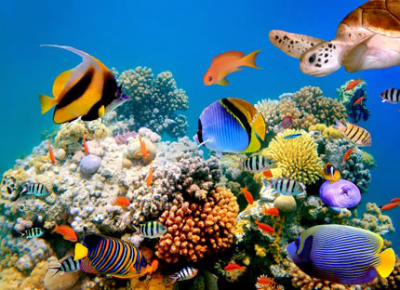

At Sharkys Fish Emporium, we are a fish store providing quality aquarium accessories for the greater Los Angeles, El Segundo, Manhattan Beach, Hermosa Beach, Redondo Beach, Torrance, Palos Verdes, Culver City, Santa Monica and surrounding areas since 1978. We specialize in exotic freshwater fish, saltwater fish and corals, African Cichlids, South American Cichlids, live plants and expertly crafted and maintained new aquariums and all the aquarium supplies and products that you will need to create living works of art in your home or office.
We carry a full line of aquarium products from quality vendors such as Marineland, Fluval, Reef Nutrition, JBJ and many more, and we have over thirty years of experience in creating and maintaining custom tanks for both freshwater and saltwater exotic fish. Come on down to Jim’s Exotic Fish and see what everyone is talking about. Located within a half mile south of the Los Angeles international airport (LAX) on Sepulveda boulevard and Mariposa in El Segundo.
We were also known for our high end filtration and fractionation (skimmers) lines. Being hobbyists at heart, we really missed the one on one relationship with hobbyists like yourself, and so we decided to change directions and open our doors to the public.
A lot has changed since the early days, not only have we (thanks to you) grown four times our original size, with over 3500 different aquarium and pond related products, 1000‘s of fish, corals and plants, but we have acquired an excellent base in our knowledgeable enthusiastic staff dedicated to this great hobby! We are always striving to learn new ideas and techniques to help make all aspects of aquarium keeping easier, more successful and of course more fun.
We cater to all aspects of the aquarium industry specializing in advanced custom reef and fish systems. But just because we know the genus and species of corals and gorgonians, doesn‘t mean we don‘t love guppies and platys! We are very proud of our planted freshwater stand alone tanks too! We invite you to take a few minutes and have a look at our articles and browse the many great photos in our archives. We would also love you to stop by our 8000 square foot store in Kearny Mesa right off freeways 163 and 52; we are open 7 days a week: